When I brought a 4-min-early clock, my secondary school timetable and a chinese calendar to school
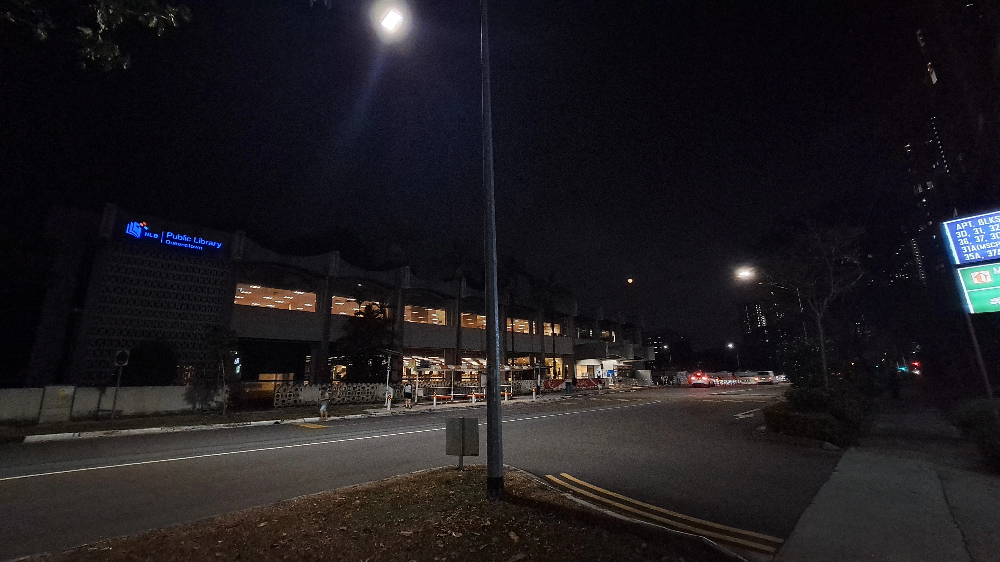
We kicked things off with presentations
Unfortunately, I went first for my presentation[1] and I was feeling a little nervous, so I felt my delivery wasn't as smooth as I hoped. Some comments about my presentation was that it was a little broad at the moment, a comment that I agreed with as there were so many directions that I wanted to go with for my topic, that the topic became a little more "muddled".
Other comments talked about the types of timekeeping methods that I had gathered in the first page of my presentation, and how it wasn't used much anymore, in favour of the commonly used clock and Gregorian calendar systems. We started discussing about the underlying system beneath time—how there are only 2 days for the weekend, and only 24 hours for everyday. Who decided these rules, and why do we follow them? Charlotte (who helped to give feedback) shared a set of paintings with temporal references [2] with me. Shu Min reccomended a book, The Slow Technology Reader which explores the idea of "Slow living" which I think would be an interesting read.
Access my slides here.
Classmates' presentations
There were many interesting topics that everyone is exploring for FYP, exploring different types of visual culture found in Singapore, siam dius, festivals, religions and personal identity. I noticed many overlapping central themes across our presentations like constructing the future by reflecting upon our past, or even comparing the past with the present.
What I think that I can improve on is to include a personal angle to my project (but how??). While listening to Shannon, Charlotte and Fioren, I realised that their anecdotes created a interesting angle to their projects, its something unique because its their personal experience.
Gathering Objects
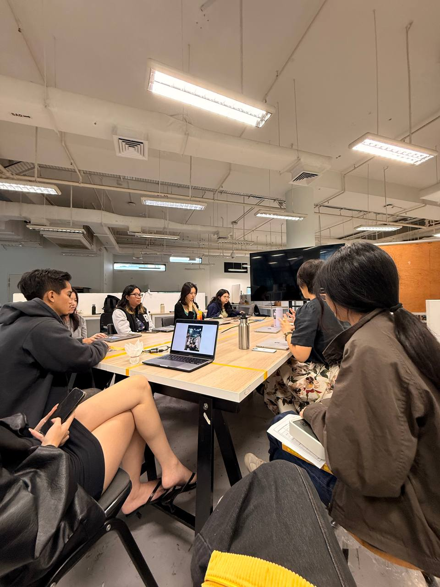
I gathered some temporal objects that I gathered from my home that I felt were interesting in the way it was used.
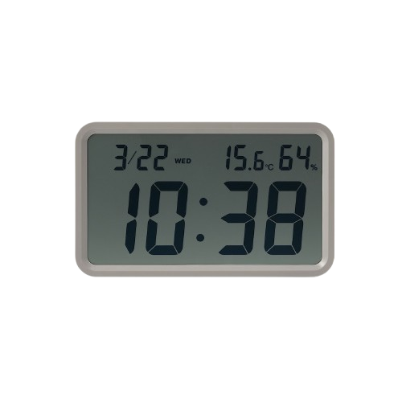
This clock was from Muji, and tells you the percentage of water in the air, temperature, date as well as time. I thought it was unique not in its making, but rather how the user(in this case, my mother) customises it. In an effort to enforce punctuality, my mother intentionally set the clock 4 mins early so that the actual time was earlier than it actually was. I thought this was interesting because why 4 minutes? Why not 5 minutes? I asked my mum this and she shrugged ¯\_(ツ)_/¯
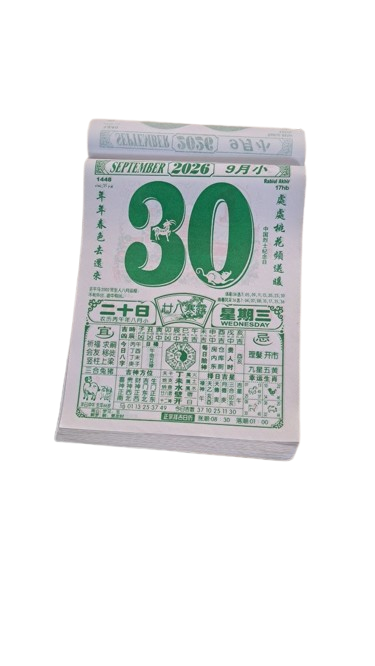
The calendar was actually my grandmother's, who gifted it to me out of the kindness of her heart (she actually wanted to get rid of it as she had 2). I have a fondness for this calendar as I also used it for the case study for my Year 2 Research Log, and you can tell that its really a Farmer's Almanac as most of the tips and precautions talked about how to not till the field on a certain day. Makes you wonder how accurate this calendar really is if its only catered for one occupation, specifically chinese farmers.
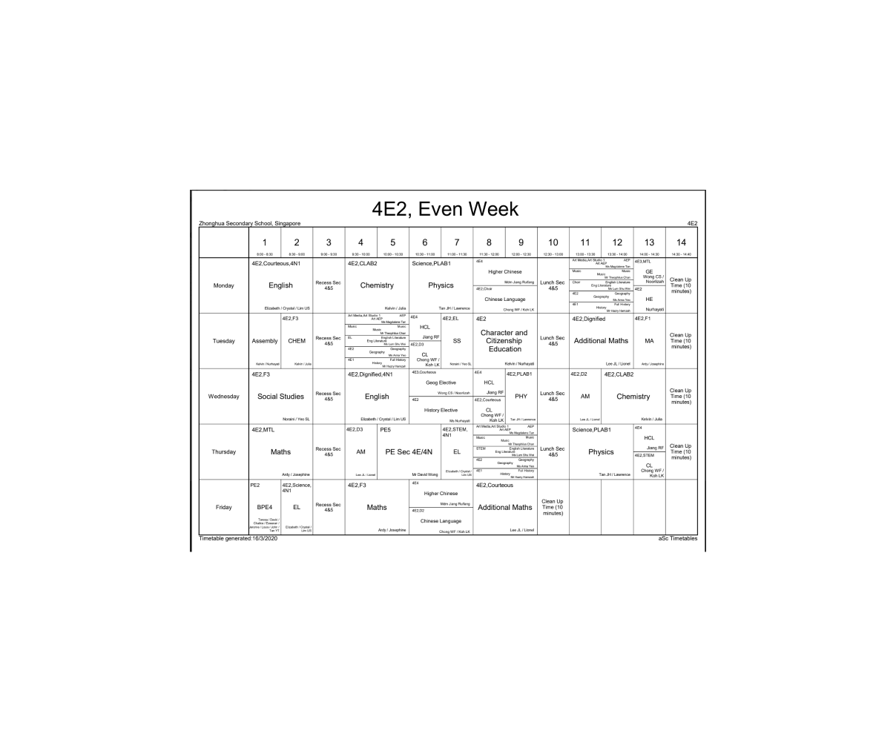
When I received this timetable for the first time in 2017, I was baffled! The densely packed brick-like layout of the classes seemed impossible to decipher at the first glance. When I took a second look all these years later, I was reminded of a quote from Edward Hall who talked about how the container-like forms of the calendar make it seem "an empty container waiting to be filled"[3].
From Edward T. Hall's The Dance of Life
Mindmapping
in a panic
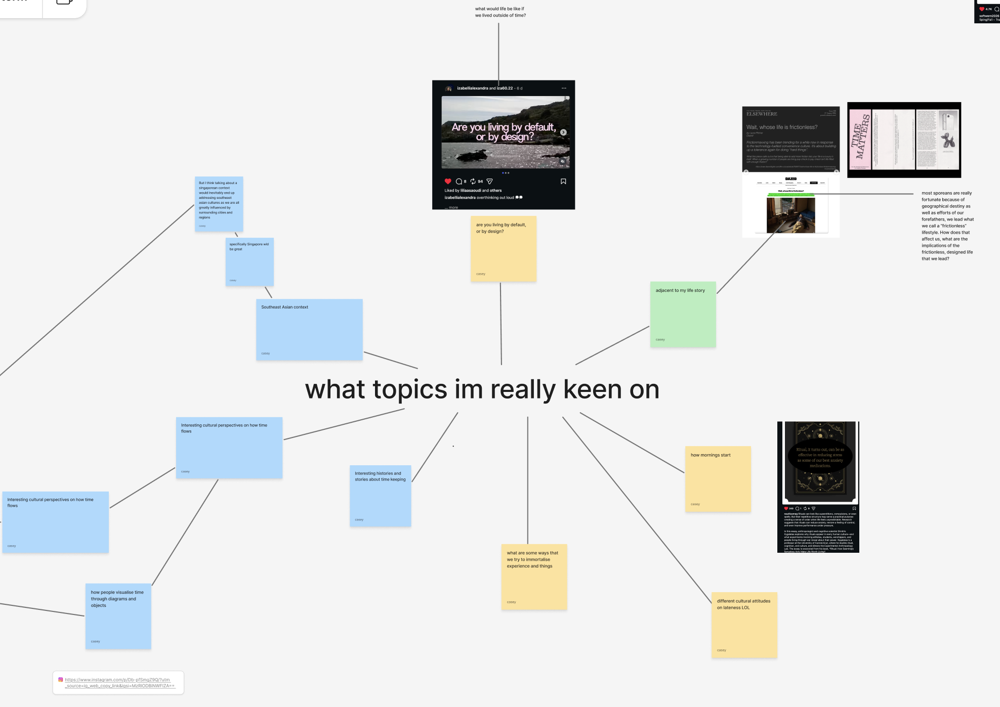
You've found me at a very
Singaporean time of my life
From past experience, mindmapping was the best way to get myself out of the mist of ideas. Through this exercise, I realised that what I really wanted to explore was more on timekeeping in the Southeast Asian context, even better if it was in Singapore. I really wanted to explore something that was truly unique. However much archives I have combed through while searching for temporal objects, I could not find a "Singaporean clock" or "Singaporean Calendar", but there are some examples of different cultural timekeeping devices in use (the Islamic Hijiri calendar, chinese almanac and the Panchangam).
Are you living by design or by default?
I also thought about expanding towards frictionless design—commenting on the frictionless design of Singapore where everything is provided to us on a platter. Could this convenience be killing us slowly? I was inspired by an Instagram post that asks the question, are you living by design or by default? which made me think about how our the way we live is "designed" in a sense that our spaces, amenities, education system are all designed by someone else. Then again, I think this is way OFF my topic...(ᵕ—ᴗ—)
Time is political
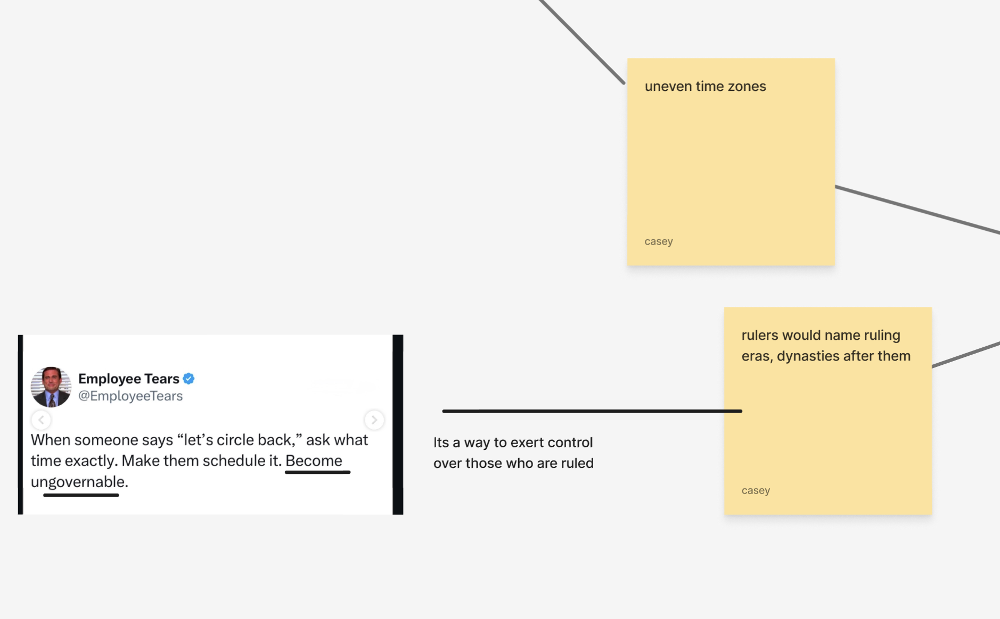
I talked to both Julia and Jasmine who shared with me about how in Thailand and Taiwan, the dates are calculated differently. Jasmine shared that how in Thailand, there are still some elderly folk who refer to how it was calculated in the past [4]. Taiwan uses the Minguo system where years are calculated from the founding of the republic in 1912—so currently the year is 115.
Introduced in 1889 by King Chulalongkorn (Rama V), this system counted years forward from the founding of Bangkok and the Chakri Dynasty by Rama I in 1782 (April 6, 1782 = Year 1).
Gathering inspo at ABF and In-Between
I was in desperate need for inspiration, but luckily for me, the art book fair and in-between fair was happening that week. We (Janice, Xiaotong and I) were very impressed by the In-Between fair as it had a very different "vibe", it was very self-exploratory and the pieces that were presented felt very unique. I really liked a booth called "Present Tense" (@siandoglook) which was an editorial exhibition that brings together writings from different young writers, reflecting on the "contradictions and ordinary experiences of living in the contemporary". I found the writings thought-provoking and insightful, particularly in critiquing the pace of life in Singapore, and how that affects young graphic designers. We also saw some of our seniors there—Eugenia and Claire (I bought a measuring tape :D).
The art book fair was much smaller than I had thought (I know it said small edition, but I didn't realise how small it would be). This was good in a way because our wallets were already very small, so we didn't buy many things there as well. It also felt more curated and focused on writings and actual books. Even so, we managed to see many interesting zines that used unique ways of making (e.g. bookbinding).
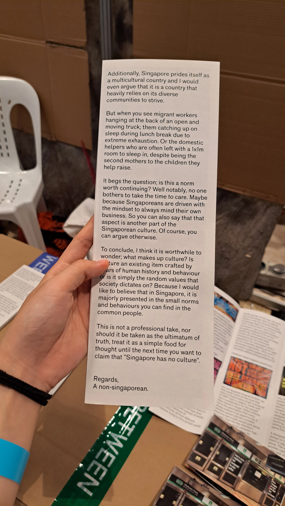
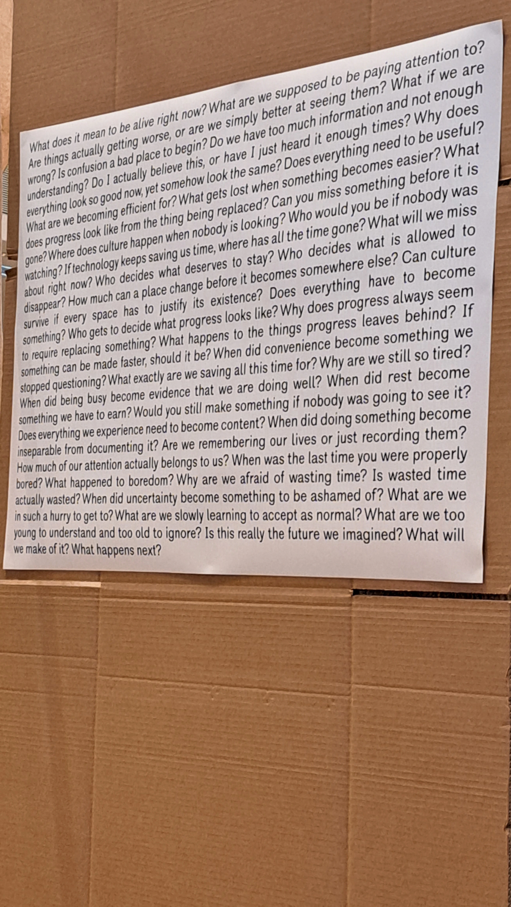
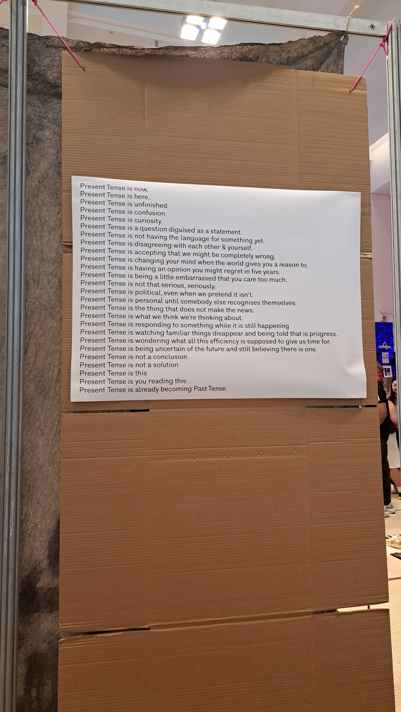
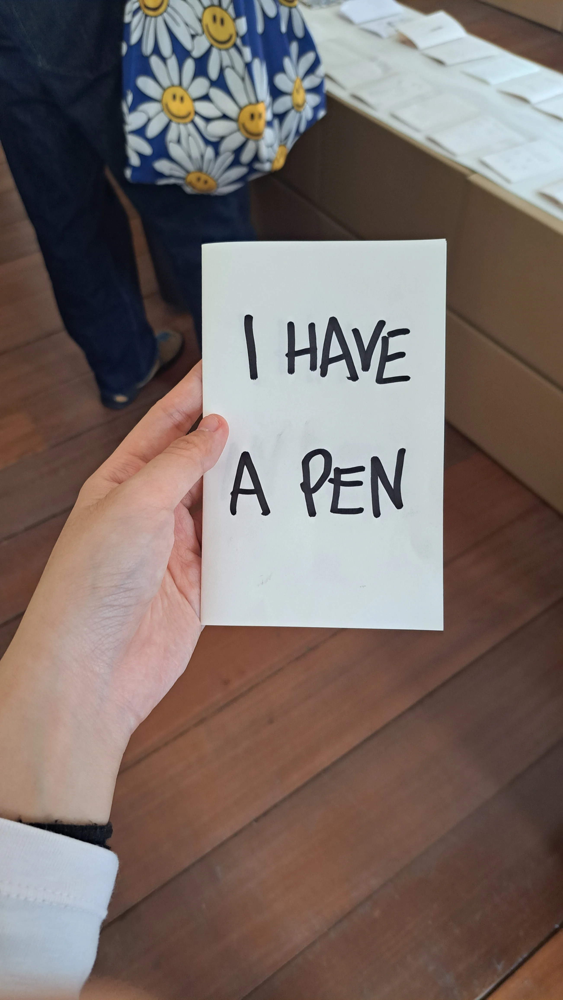
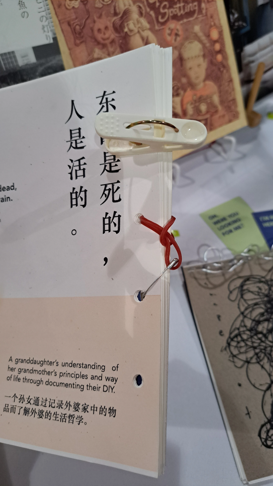
Readings of
the week (╭ರ_•́)
The Slow Technology Reader
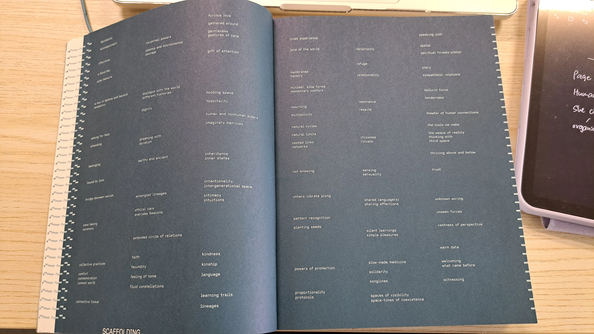
How Slow Design works, thinking twice when engaging with technology — are we diminishing, taking away from the environment or certain groups of people when using these technologies. “Slow” here is not just about slowing down, but also looking at the world through a "spatial, regional and temporal prism."
Time Matters: On the Temporal Dimension of Graphic Design
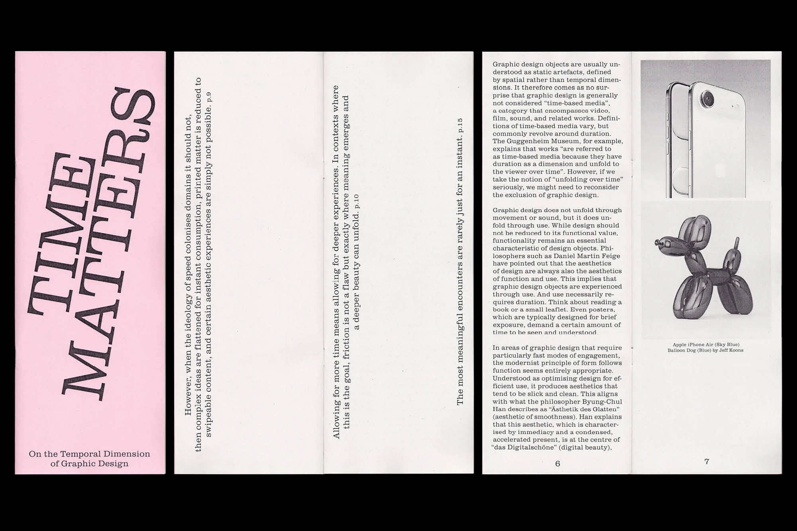
After our presentations, I came across this short, interesting publication by Nguyen Gobber that talks about time in the context of graphic design, particularly in information dissemination. It talked a lot more about the benefits of Design Friction but I really enjoyed reading it.
The panic starts to sink in. I started to feel a little overwhelmed this week as there were so many concepts that I wanted to explore. I definitely need to do some scoping but I'm scared of committing to one direction as I fear I would change my mind.
Reading Time Matters and the Slow Technology Reader helped me to see time in different "situations" outside of just the passing of time— in terms of how it is embedded in different contexts e.g. through slowing down our information processing speed through design friction. Then again, even while reading more is useful, I get more ideas so I really need to determine my boundaries...